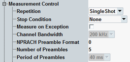

The "Measurement Control" parameters configure the scope of the NB-IoT NPRACH measurement and inform the measurement about preamble-related signal properties normally determined by higher layers.
The "Measurement Control" section consists of a general part (see below), a part with "Modulation Settings" and a part with "Power Settings".

Defines how often the measurement is repeated if it is not stopped explicitly or by a failed limit check.
- Continuous: The measurement is continued until it is explicitly terminated. The results are periodically updated.
- Single-Shot: The measurement is stopped after one statistics cycle.
Single-shot is preferable if only a single measurement result is required under fixed conditions, which is typical for remote-controlled measurements. Continuous mode is suitable for monitoring the evolution of the measurement results in time and observe how they depend on the measurement configuration, which is typically done in manual control. The reset/preset values therefore differ from each other.
- "None": The measurement is performed according to its "Repetition" mode and "Statistic Count", irrespective of the limit check results.
- "On Limit Failure": The measurement is stopped when one of the limits is exceeded, irrespective of the repetition mode set. If no limit failure occurs, it is performed according to its "Repetition" mode and "Statistic Count". Use this setting for measurements that are intended for checking limits, e.g. production tests.
Specifies whether measurement results that the R&S CMW identifies as faulty or inaccurate are rejected. A faulty result occurs, for example, when an overload is detected. In remote control, the cause of the error is indicated by the "reliability indicator".
- Off: Faulty results are rejected. The measurement is continued. The statistical counters are not reset. Use this mode to ensure that a single faulty result does not affect the entire measurement.
- On: Results are never rejected. Use this mode for development purposes, if you want to analyze the reason for occasional wrong transmissions.
Displays the channel bandwidth. The bandwidth is fixed for NB-IoT signals.
Enter the NPRACH preamble format used by the UE.
For background information, see "NB-IoT Preamble Structure".
Remote command:Specifies the number of preambles to be captured per measurement interval for multi-preamble result views, for example "EVM vs Preamble" and "Power vs Preamble".
The period expected between subsequent preambles is fixed and is displayed for information as "Period of Preambles".
Single-preamble views evaluate only one preamble per measurement interval. To achieve maximum measurement speed for these views, set "Number of Preambles" to 1.
See also "Defining the Scope of the Measurement".
Remote command: